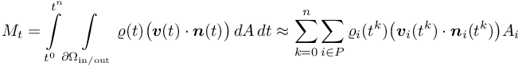
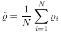

Simulate with complex geometries and complex physics
MASS_correction_DivergenceVelocity
Mass Correction for weakly compressible flow problems
Default: MASS_correction_DivergenceVelocity = 'NON'
It only works for the LIQUID solver and for problems with pressure dependent densities!
Furthermore at the moment an inflow and/or outflow boundary condition is required to determine the target mass!
The idea is to add a source term to the continuity equation
in order to compensate the mass loss resp. the gain in mass. Hence the desired divergence of velocity for the CorrectionPressureAlgorithm
(see DesiredAndNominalDivergenceOfVelocity) is computed by
This is also used for the computation of the dynamic pressure (see FLIQUID_ConsistentPressure_Version, ClassicalDPA, RegularizeDPA, AlternativeDPA).
Therefore it can be interpreted as a correction method of the dynamic pressure as well.
For the computation of the source term the relative error of target mass
 .
But overall the product
.
But overall the product  is limited by
This results in the source term
where
is limited by
This results in the source term
where

and current mass
is computed by
Moreover the relative error is weighted with a coefficient , which depends on the absolute error, the smaller the mass difference the higher .
But overall the product is limited by
This results in the source term

is the average density.
| This item is referenced in: | |
|---|---|
| MASS_correction_DivergenceVelocity | Mass Correction for weakly compressible flow problems |